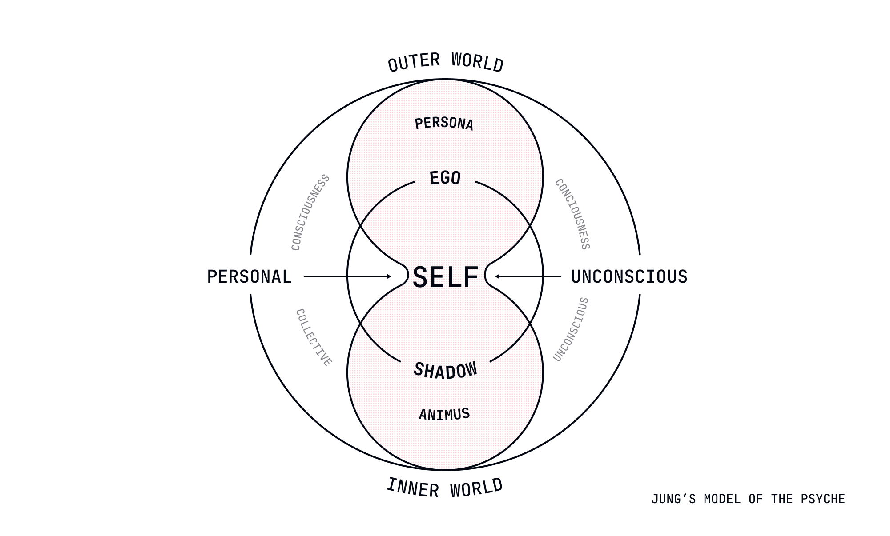
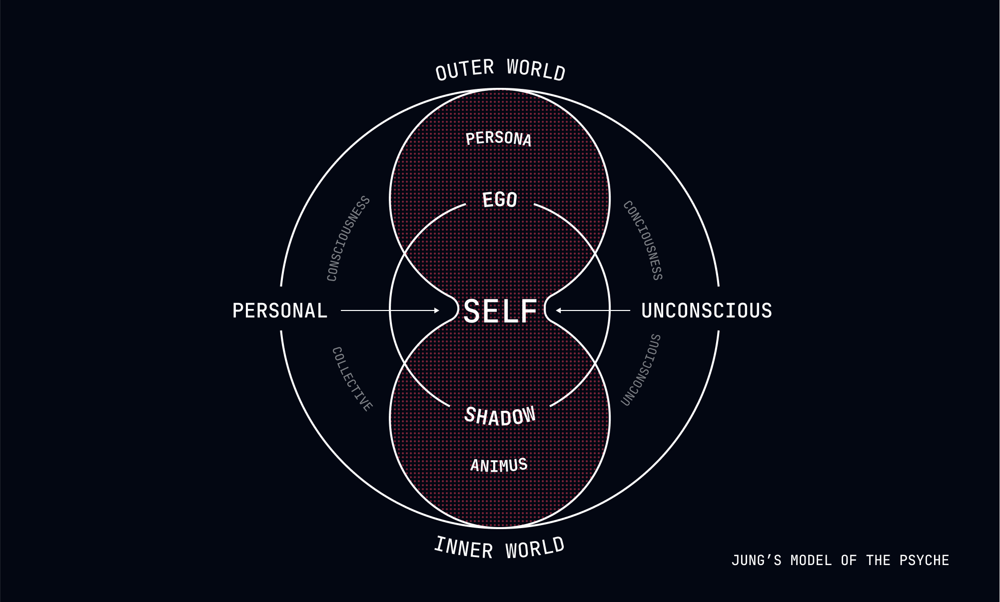

Maintaining a Sense of Self
Who you think you are has been assigned to you by circumstance.


The Constructed Identity
Throughout your life, you've operated under the assumption that you possess a stable, coherent self—an "I" that persists through time, makes choices, and has defining characteristics that make you uniquely you. This sense of self forms the foundation for how you navigate the world, providing continuity and meaning to your experiences.
There's just one problem: this self you cherish wasn't chosen by you. It was constructed through processes entirely outside your control. Your personality traits, core values, beliefs, preferences, and even your sense of being a continuous entity were determined by your genetics, childhood experiences, cultural context, and random life events.
The "you" reading these words is as predetermined as the weather—the inevitable result of causal factors stretching back before your birth and continuing through every moment of your existence. This recognition creates an apparent paradox: how do you maintain a functional sense of self while understanding that this self was never yours to create or control?
The Reality of Assigned Identity
To understand how to maintain a sense of self in a determined world, we must first recognize how your identity actually formed:
Your personality traits weren't chosen but emerged from the interaction between your genetic predispositions and environmental influences. The extrovert didn't choose sociability any more than the introvert chose a preference for solitude. These tendencies were installed by factors outside their control.
Your core values weren't selected through rational deliberation but were programmed by your particular configuration of experiences and exposures. The person who values achievement didn't choose this orientation any more than the person who values connection chose theirs. These values were determined by causal factors they didn't arrange.
Your beliefs about yourself and the world weren't arrived at through purely logical analysis but were shaped by the specific information you happened to encounter and the cognitive architecture you happened to possess. The optimist didn't choose their outlook any more than the pessimist chose theirs. These perspectives were inevitable given their specific causal history.
Even your sense of being a continuous "I" wasn't freely adopted but emerged from neurological processes designed to create the useful fiction of a unified self. This sense of continuity wasn't chosen but installed by evolutionary processes optimizing for functional navigation of complex environments.
In short, who you think you are has been assigned to you by circumstance.
The Practical Necessity of Self-Concept
Despite the constructed nature of identity, a functional sense of self remains practically necessary. Without some coherent self-concept, navigation through life becomes impossibly disjointed and inefficient. The question isn't whether to have a sense of self (inevitable for most functioning humans) but how to maintain one while recognizing its determined nature.
This isn't a contradiction but a practical accommodation—similar to how understanding that solid objects are mostly empty space doesn't prevent you from treating them as solid for practical purposes. You can simultaneously recognize the constructed nature of your identity while using this construction as a practical framework for navigation.
Deterministic Approaches to Self-Maintenance
1. From Authentic Self to Assigned Self
Rather than searching for your "authentic self" (which assumes a true self exists independently of causal factors), recognize your "assigned self"—the particular configuration of traits, tendencies, and patterns that were inevitably installed by your specific causal history.
This assigned self isn't less real or valuable because it was determined rather than chosen. It's the only self you could possibly have, given your particular configuration of causal factors. The person who recognizes their assigned nature doesn't value themselves less but stops wasting energy trying to discover or create an authentic self that exists outside of causal determination.
2. From Self-Creation to Self-Recognition
Instead of trying to create yourself through choices (impossible in a determined world), focus on recognizing the self that was inevitably created by factors outside your control. This isn't passive resignation but accurate perception of how your identity actually formed.
When considering career directions, don't ask "Who do I want to be?" (which assumes choice) but "Who was I inevitably shaped to become?" This isn't limiting but clarifying—it directs attention to the patterns and tendencies that were actually installed rather than to fictional possibilities that exist only in imagination.
3. From Fixed Self to Process Self
Rather than viewing your identity as a fixed entity you must discover or create, recognize it as an ongoing process determined by the continuous interaction between your assigned nature and your current circumstances. This process wasn't chosen but emerges inevitably from causal factors.
The person who recognizes their identity as process doesn't become less stable (their stability is equally determined) but stops adding the suffering that comes from believing they should have a fixed, definable essence. Their predetermined nature will express itself with or without this belief, but without it, the expression occurs with less interference from fictional expectations.
Practical Techniques for Deterministic Self-Maintenance
The Causal Biography Exercise
Construct your causal biography—the factors that inevitably led to your current identity:
- What genetic predispositions shaped your basic tendencies?
- What childhood experiences installed your core patterns?
- What cultural messages programmed your beliefs and values?
- What random life events redirected your developmental trajectory?
This biography doesn't diminish your uniqueness (your particular configuration of causal factors is still unique) but places it in proper context as determined rather than chosen. The person who recognizes how their ambition was inevitably installed by specific parental messages, cultural exposures, and early successes doesn't value this trait less but stops believing they somehow chose or created it.
The Identity Inventory Practice
Inventory the components of your current identity, recognizing each as assigned rather than chosen:
- Personality traits that were determined by genetics and early experiences
- Values that were installed by your particular exposures and reinforcements
- Beliefs that were programmed by the information you happened to encounter
- Preferences that emerged from your specific configuration of sensitivities and associations
This inventory doesn't create choice about these components (impossible) but clarifies their determined nature. The person who recognizes their introversion was assigned rather than chosen doesn't try to become extroverted (unless that change was itself determined) but stops adding the suffering that comes from believing they should be able to choose their basic tendencies.
The Narrative Integration Process
Construct a narrative of your life that integrates the determined nature of your development while still providing practical continuity:
- How did your assigned characteristics inevitably interact with your circumstances?
- What patterns emerged not by choice but through causal necessity?
- How did your predetermined responses to events further shape your trajectory?
- What meaning emerges not from choice but from recognition of your particular path?
This narrative doesn't create choice about your development (impossible) but provides the practical continuity necessary for efficient functioning. The person who recognizes how their career path was determined by factors outside their control doesn't value their work less but stops believing they authored their professional story through wise choices.
The Self-As-Observer Practice
Develop the capacity to observe your assigned characteristics without identifying completely with them:
"I notice the ambition that was installed in me by my particular causal history." "I'm aware of the anxiety tendencies that were inevitably programmed into my system." "I observe the preference patterns that emerged from my specific configuration of sensitivities."
This practice doesn't create choice about these characteristics (impossible) but provides some psychological space between your observing awareness and your assigned traits. The person who can observe their predetermined patterns without complete identification doesn't change these patterns (unless that change was itself determined) but experiences them with less fusion and reactivity.
Case Study: The Identity Crisis
Consider Alex, who experienced what's conventionally called an "identity crisis" after a major career setback. From a free will perspective, Alex needed to rediscover their authentic self or choose a new identity. From a deterministic perspective, Alex was experiencing the inevitable disorientation that occurs when circumstances disrupt established patterns of self-concept.
After practicing deterministic self-maintenance, Alex didn't discover or create an authentic self (impossible) but recognized the assigned nature of their identity. They constructed a causal biography that revealed how their previous career identity was inevitably installed by parental expectations, educational opportunities, early successes, and cultural messaging.
This recognition didn't create choice about their future direction (impossible) but removed the additional suffering that came from believing they should be able to choose who they truly were. Alex's predetermined nature continued to express itself, but without the interference of believing this expression should emerge from free choice rather than causal necessity.
When a new professional direction eventually emerged (as it inevitably would given Alex's particular configuration of traits and circumstances), Alex didn't experience this as a chosen identity but as the inevitable expression of their assigned characteristics encountering new conditions. This understanding didn't make the direction less meaningful (their sense of meaning was equally determined) but prevented the suffering that comes from believing meaning must emerge from choice rather than recognition.
The Paradoxical Benefits of Assigned Identity
Perhaps the most counterintuitive aspect of recognizing your assigned nature is how it can create a more stable and functional sense of self. By understanding that your identity was determined by factors outside your control, you remove the destabilizing pressure of believing you should be able to choose or create who you are.
The person who recognizes their assigned nature doesn't experience less continuity (their sense of continuity is equally determined) but stops adding the suffering that comes from believing they should be able to reinvent themselves through sheer will. Their predetermined characteristics will express themselves with or without this belief, but without it, the expression occurs with less interference from impossible expectations.
Moreover, recognizing your assigned nature often creates greater self-acceptance. When you understand that your traits and tendencies weren't chosen but installed by factors outside your control, self-judgment often diminishes. You wouldn't blame a calculator for performing calculations according to its programming; similarly, recognizing your determined nature can reduce the harsh self-criticism that comes from believing you could be different through choice.
The Liberation of Recognized Assignment
There's a profound liberation in recognizing that who you think you are has been assigned to you by circumstance. This recognition doesn't diminish your uniqueness or value—your particular configuration of causal factors is still uniquely yours, even if you didn't choose it. But it releases you from the exhausting burden of believing you must discover, create, or perfect your "true self" through choice.
The person who understands their assigned nature doesn't experience less meaning or purpose (their sense of meaning is equally determined) but stops adding the suffering that comes from believing meaning must emerge from choice rather than recognition. Their predetermined characteristics will create meaning with or without this belief, but without it, the meaning emerges with less interference from fictional expectations.
This liberation extends to how you view your future development. When you recognize that your identity is an ongoing process determined by the interaction between your assigned characteristics and current circumstances, you can stop agonizing over who you "should" become and simply observe who you are inevitably becoming through causal necessity.
Self Without Choice
It's crucial to distinguish between having a sense of self (practically necessary) and believing this self was created through choice (philosophically incorrect). Deterministic self-maintenance doesn't eliminate identity but places it in proper context as assigned rather than chosen.
The scientist who recognizes their curiosity was installed by specific early experiences and genetic predispositions doesn't value this trait less or express it less fully. They simply understand its causal origins more accurately. Their predetermined nature continues to express itself, but without the distortion that comes from believing this expression emerges from choice rather than causal necessity.
This distinction is particularly important because a functional sense of self appears necessary for efficient navigation through life. The goal isn't to eliminate identity (which would create practical problems) but to maintain it while recognizing its determined nature. You can simultaneously understand that your self was assigned by circumstance while using this assigned self as a practical framework for moving through the world.
Next Steps
As we conclude this module on "Navigation: Steering Through the Inevitable," you now understand how to widen your field of view to anticipate difficulties, recognize coincidental alignment when things go well, forgive others by understanding the determined nature of their actions, relate to anxiety as accurate information about your lack of control, and maintain a sense of self while recognizing its assigned nature.
In our next module, "Destination: Arriving Where You Must," we'll explore how to find meaning and satisfaction in a determined world. We'll examine how understanding that you'll inevitably arrive at your predetermined destination can paradoxically create a more peaceful and engaged journey.
Remember: You didn't choose to read this lesson, and you won't choose how to maintain your sense of self. The identity you experience wasn't created by you but assigned to you by circumstance. But recognizing the determined nature of your self might inevitably reduce the suffering that comes from believing you should be able to choose who you are. Isn't that a curious comfort?